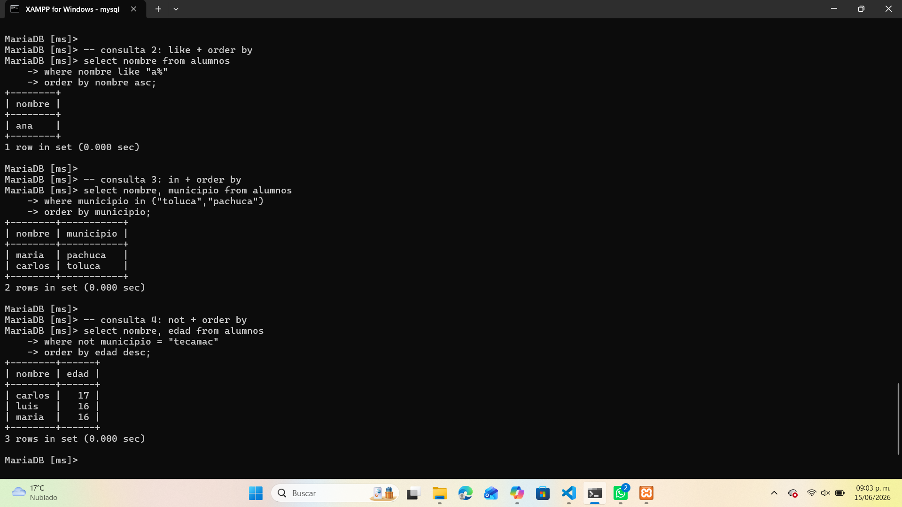
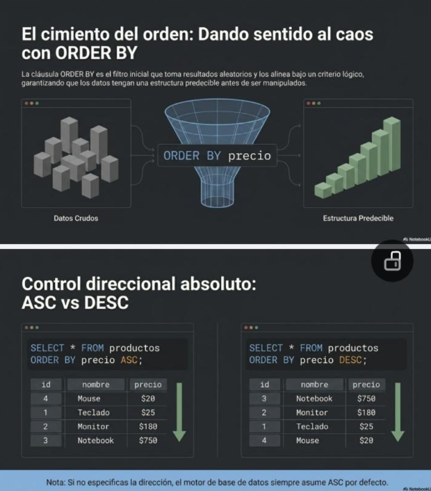

Ordenar Registros con ORDER BY
La cláusula ORDER BY se utiliza para ordenar los resultados de una consulta SQL según una o más columnas. Permite organizar los datos de forma ascendente (ASC) o descendente (DESC), facilitando su lectura y análisis.
Sintaxis básica
SELECT columnas FROM nombre_tabla
ORDER BY columna [ASC | DESC];Por defecto, si no se especifica la dirección, el orden será ASC (ascendente).
Ejemplo 1: Ordenar con LIKE
Consulta los nombres que comienzan con “A” y ordénalos alfabéticamente.
SELECT nombre FROM alumnos
WHERE nombre LIKE 'A%'
ORDER BY nombre ASC;Ejemplo 2: Ordenar con IN
Consulta los alumnos de los municipios “Toluca” y “Pachuca”, ordenados por municipio.
SELECT nombre, municipio FROM alumnos
WHERE municipio IN ('Toluca','Pachuca')
ORDER BY municipio;Ejemplo 3: Ordenar con NOT
Consulta los alumnos que no son de Tecámac y ordénalos por edad descendente.
SELECT nombre, edad FROM alumnos
WHERE NOT municipio = 'Tecamac'
ORDER BY edad DESC;Ejemplo práctico en MySQL
En este ejemplo se muestran consultas con ORDER BY combinado con operadores LIKE, IN y NOT:

Infografía general

Recomendaciones
- Usa ASC para ordenar de menor a mayor o de A a Z.
- Usa DESC para ordenar de mayor a menor o de Z a A.
- Puedes ordenar por más de una columna separándolas con comas.
- Combina ORDER BY con WHERE para filtrar y ordenar simultáneamente.
- Recuerda que el orden afecta solo la visualización, no los datos almacenados.